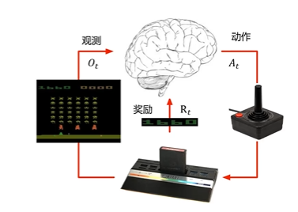

强化学习基础
马尔可夫决策过程
回顾
- 强化学习算法区别于其他机器学习算法：
- 没有监督数据，只有奖励信号
- 奖励信号不一定实时，可能存在延迟
- 时间是一个重要因素
- 智能体当前的动作影响后续接收到的数据
- 目标：选择一定的动作序列以最大化未来的总体奖励
- 智能体的行为可能是一个很长的动作序列
- 大多数时候奖励是延迟的
- 宁愿牺牲即时（短期）奖励以获取更多的长期奖励
所有问题的目标都可以被描述成最大化期望的累计奖励

智能体在每个时间步t： + 接收观测(observation) \(O_t\) + 接受标量奖励信号 \(R_t\) + 执行动作(action) \(A_t\)
环境： + 接收动作 \(A_t\) + 产生观测 \(O_{t+1}\) + 产生标量奖励信号 \(R_{t+1}\)
- 历史(History)是观测、行动和奖励的序列
- \(H_t=O_1,R_1,A_1,O_2,R_2,A_2,...,O_{t-1},R_{t-1}\)
- 状态(State)是一种用于确定接下来会发生的事情（行动、观察、奖励）的信息
- 状态是关于历史的函数 \(S_t=f(H_t)\)
- 环境的可观测性：
- 完全可观测：智能体可以直接观察到全部环境状态
- 部分可观测：智能体只能部分的观测到环境
- 智能体的组成：
- 策略（Policy）：智能体的行为函数。输入为状态，输出为行动决策
- 价值函数（Value function）：评估每个状态或行动有多好
- 模型 （Model）：智能体对环境的表示，是智能体眼里的环境
马尔可夫决策过程（Markov decision processes, MDP）
2.1 马尔可夫性质
- 定义：状态 \(S_t\) 具有马尔可夫性，当且仅当 \(\mathbb{P}[S_{t+1}|S_t]=\mathbb{P}[S_{t+1}|S_1,...,S_t]\)
"未来只与现在有关，与过去无关" + 给定当前时刻的状态，将来与历史无关 + 状态是对过去的充分统计
2.2 状态转移矩阵
- 对于马尔可夫状态 \(s\) 与其后继状态 \(s'\)，它们的状态转移概率定义为： $P_{ss'}=[S_{t+1}=s'|S_t=s] $ （当前状态是\(s\)的情况下，下一个状态是\(s'\)的概率）
- 状态转移矩阵P定义了马尔可夫状态s到其所有后继状态s'的转移概率
$
上式中\(p_{1n}\)可以理解为\(s_1\)到\(s_n\)的概率 + 矩阵的每一行总和为1 ### 2.3 马尔可夫过程 + 马尔可夫过程是一种无记忆的随机过程 + 马尔可夫过程可以分为三类 + 时间、状态都离散的马尔可夫过程（马尔科夫链） + 时间连续、状态离散的马尔可夫过程（连续时间的马尔科夫链） + 时间、状态都连续的马尔可夫过程